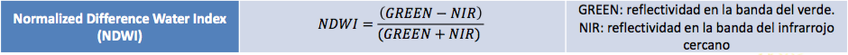

En esta sección, exploraremos el procesamiento de imágenes satelitales y otros datos geoespaciales con Google Earth Engine (GEE) y R. Al utilizar GEE, podremos acceder a una amplia variedad de recursos satelitales y climáticos que nos serán útiles en nuestros análisis. También aprenderemos a crear nuevos índices normalizados para obtener información precisa y detallada sobre los cambios en la superficie terrestre. Por otro lado, R es un lenguaje de programación popular y flexible que nos permitirá realizar análisis avanzados de datos geoespaciales de manera eficiente y efectiva. La combinación de estas dos herramientas nos permitirá realizar análisis complejos y obtener resultados valiosos que nos ayudarán a comprender mejor nuestro entorno.
6.1 Índice de Diferencia Normalizada de Agua (NDWI)
El índice de Diferencia Normalizada de Agua (NDWI) es un índice que se utiliza en percepción remota para identificar cuerpos de agua y humedad en la superficie de la tierra. Este índice es especialmente útil cuando se utiliza con imágenes satelitales de Landsat, ya que utiliza bandas espectrales específicas para detectar la presencia de agua.
Ejemplo de resultados de NDWI
El índice NDWI se calcula como (NIR - SWIR) / (NIR + SWIR), donde NIR es la banda del infrarrojo cercano y SWIR es la banda del infrarrojo de onda corta. La razón detrás de este cálculo es que el agua absorbe más radiación en la banda del infrarrojo cercano y refleja menos radiación en la banda del infrarrojo de onda corta, en comparación con otros objetos en la superficie terrestre. Por lo tanto, los cuerpos de agua y la humedad en la superficie de la tierra tendrán un valor NDWI más alto que otros objetos en la imagen.
El índice NDWI es especialmente útil para la detección de cuerpos de agua y humedad en áreas como los bosques y los cultivos, lo que puede ser importante para la comprensión de la salud del ecosistema y la evaluación de la disponibilidad de agua para los cultivos.
Dependiendo de la extensión del área de estudio o la disponibilidad de imágenes de calidad (que hayan pasado filtros), a veces es necesario construir un mosaico que es una combinación o fusión de dos o más imágenes.
Repressentación Gráfica de un Mosaico
6.2 Modelo Digital de Elevación
Un Modelo Digital de Elevación (MDE) es un conjunto de datos que representa la elevación de la superficie terrestre en una región en particular. Los datos del MDE se utilizan comúnmente en percepción remota para la creación de mapas topográficos y la identificación de características geográficas, como montañas, valles y cuerpos de agua.
Los MDE se crean mediante la recopilación de datos de elevación a través de diversas técnicas, como la fotogrametría, el LiDAR y la interferometría de radar. Los datos resultantes se procesan para crear un modelo tridimensional de la superficie terrestre que se puede utilizar para análisis y visualizaciones. Los MDE son una herramienta esencial en la percepción remota y se utilizan en una variedad de aplicaciones, desde la gestión de recursos naturales hasta la planificación urbana y la navegación.
DSM:
El Modelo Digital de Superficie representa las elevaciones sobre el nivel del mar de las superficies reflectantes de árboles, edificios y otras características elevadas sobre la “Tierra desnuda”.
AVE:
Elevation value calculated by average. Valor de elevación calculado mediante el re-muestreo promedio de un modelo de grilla de 5 metros.
Aspect:
La orientación puede pensarse como la dirección de la pendiente Slope (pendiente): La pendiente representa la inclinación de la superficie.
6.3 Información Climática
6.3.1 Precipitaciones
TerraClimate is a dataset of monthly climate and climatic water balance for global terrestrial surfaces. University of California Merced.
Resolución Espacial: 2.5 arc minutes (1 arc min = 1,85 km) = 4625 metros
Resolución Temporal: 1 mes
Disponible: 1958-01-01 - 2023-04-30
6.3.2 Temperatura
NCEP Climate Forecast System es un modelo totalmente acoplado que representa la interacción entre la atmósfera terrestre, los océanos, la tierra y el hielo marino. Desarrollado en el Environmental Modeling Center (EMC) en NCEP.
Resolución Espacial: 0.2 arc degrees (1 arc min = 1,85 km) = 22.2 Km
6.4.3 Calcular NDWI (Normalized Difference Water Index)

ndwi <- imagen$normalizedDifference(c("B3", "B5")) # Considerar esta otra forma calcular indices normalizadosndwiViz <-list(min =0, max =1, palette =c("00FFFF",'0080FF', "0000FF"))Map$setCenter(-73.225, -39.828, 12)Map$addLayer(ndwi, ndwiViz,'NDWI')
6.4.4 Crear Mácara por umbral
ndwiMask <- ndwi$updateMask(ndwi$gte(0.15)) # similar a los umbrales de NDVI para estimar vegetaciónMap$addLayer(ndwiMask, ndwiViz,'Máscara NDWI')
DEM <- ee$Image("JAXA/ALOS/AW3D30/V2_2")$clip(region) # cortar por región de estudio# ee_print(DEM) #visualizar atributos de objeto gee DEMDSM <- DEM$select('AVE_DSM');aspect <- ee$Terrain$aspect(DEM)slope <- ee$Terrain$slope(DEM)
Reading layer `Reg_Met' from data source
`/Users/denisberroeta/Library/CloudStorage/OneDrive-UniversidadAdolfoIbanez/CIT/DOCENCIA/CURSO_SII_PR/book_PR_SII/data/shape/Reg_Met.shp'
using driver `ESRI Shapefile'
Simple feature collection with 1 feature and 2 fields
Geometry type: POLYGON
Dimension: XY
Bounding box: xmin: -71.71523 ymin: -34.29093 xmax: -69.76999 ymax: -32.92194
Geodetic CRS: WGS 84
rm_ee <- rm%>%st_geometry() %>%## Solamente me quedo con la geometría (descarto la data)sf_as_ee()
terraclimate <- ee$ImageCollection("IDAHO_EPSCOR/TERRACLIMATE")$filterDate("2017-01-01", "2018-01-01")$map(function(x){ date <- ee$Date(x$get("system:time_start"))$format('YYYY_MM_dd') name <- ee$String$cat("Terraclimate_pp_", date) x$select("pr")$reproject("EPSG:4326")$set("RGEE_NAME", name) })#proceso clave de extracción de datos satelitales y los lleva a tablaee_rm_rain <-ee_extract(x = terraclimate, y = rm_ee, sf =FALSE )
Number of features: Calculating ...
Number of features: 1
temp <- ee$ImageCollection('NOAA/CFSV2/FOR6H')$filterDate('2019-01-01', '2019-04-01')$map(function(x){ date <- ee$Date(x$get("system:time_start"))$format('YYYY_MM_dd') name <- ee$String$cat("temp_", date) x$select("Temperature_height_above_ground")$set("RGEE_NAME", name) })ee_rm_temp <-ee_extract(x = temp, y = rm_ee, sf =FALSE )
Number of features: Calculating ...
Number of features: 1
#función para generar vector de días make_rep <-function(min, max, n_rep =4){ vec <-NULLfor(i in min:(max/n_rep)){ num <-rep(i, n_rep) vec <-c(vec, as.integer(num))}return(vec)}dias <-make_rep(min =1, max =length(ee_rm_temp), n_rep =4)temp_data <- ee_rm_temp %>%pivot_longer(cols =1:length(ee_rm_temp), names_to ="dia_total", values_to ="temp")%>%mutate(dia = dias, gr_celcius =as.numeric(temp) -273.15 )%>%group_by(dia)%>%summarise(temp_prom =mean(gr_celcius),.groups ="keep" )%>%as.data.frame()ggplot(data = temp_data, aes(x = dia, y = temp_prom, color = temp_prom)) +geom_point() +geom_line(alpha =0.4) +scale_color_viridis(option="magma")+ggtitle(lab ="Temperatura: NOAA/CFSV2/FOR6H", subtitle ="Región Metropolitana") +xlab("Día") +ylab("Temperatura") +theme_minimal()
6.6.4.2 Temperatura Las Condes 4 veces al día
LC_ee <-st_read("data/shape/LasCondes.shp") %>%st_transform("+proj=longlat +datum=WGS84 +no_defs")%>%st_geometry() %>%# solo quedarse con la geometríasf_as_ee()
Reading layer `LasCondes' from data source
`/Users/denisberroeta/Library/CloudStorage/OneDrive-UniversidadAdolfoIbanez/CIT/DOCENCIA/CURSO_SII_PR/book_PR_SII/data/shape/LasCondes.shp'
using driver `ESRI Shapefile'
Simple feature collection with 1 feature and 6 fields
Geometry type: POLYGON
Dimension: XY
Bounding box: xmin: 350513.9 ymin: 6293910 xmax: 367354.6 ymax: 6307356
Projected CRS: WGS 84 / UTM zone 19S
ee_lc_temp <-ee_extract(x = temp, y = LC_ee, sf =FALSE)
Number of features: Calculating ...
Number of features: 1
# Extrae los valores por un promedio por cada geometría# fun = ee$Reducer$mean()dias <-make_rep(min =1, max =length(ee_lc_temp), n_rep =4)temp_data <- ee_lc_temp %>%pivot_longer(cols =1:length(ee_rm_temp), names_to ="dia_total", values_to ="temp")%>%mutate(dia = dias, gr_celcius =as.numeric(temp) -273.15 )%>%group_by(dia)%>%summarise(temp_prom =mean(gr_celcius),.groups ="keep" )%>%as.data.frame()ggplot(data = temp_data, aes(x = dia, y = temp_prom, color = temp_prom)) +geom_point() +geom_line(alpha =0.4) +scale_color_viridis(option="magma")+ggtitle(lab ="Temperatura: NOAA/CFSV2/FOR6H", subtitle ="Comuna de Las Condes") +xlab("Día") +ylab("Temperatura") +theme_minimal()